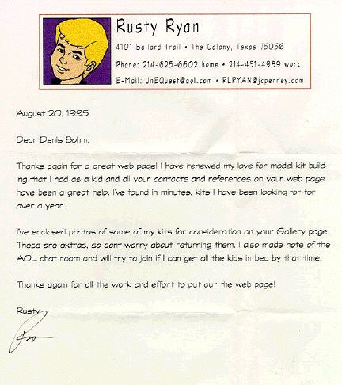

<html>

<head>
<title>Notes from Readers</title>
<link rev="made" href="mailto:gremlins@gremlins.com">
</head>

<body bgcolor="#ffffff">

<h1>
<center>
<a href="../index.html"></a><br>
<a href="/cgi-bin/ImageMap.exe/../garage/navigate.map"></a><br>
<map name="navigate">
<area coords="0,0,75,75" href="../garage/contents.html">
<area coords="78,0,153,75" href="http://www.gremlins.com/servlet/NewStuff">
<area coords="156,0,231,75" href="http://www.gremlins.com/servlet/Bite">
<area coords="234,0,309,75" href="../garage/garages.html">
<area coords="312,0,387,75" href="../garage/articles.html">
<area coords="390,0,465,75" href="gallerySearch.jsp">
<area coords="468,0,543,75" href="../garage/resources.html">
</map>
</center>
</h1>
<p><center></center><p>

<center></center>

<p><center></center><p>

<dl>
<dd><pre>
From: Harry Ewasiuk <shogun@ccinet.ab.ca>
Organization: Real Time Technologies Inc.
To: gremlins@gremlins.com
Subject: Great Page!

Thank you for establishing this cool web page. It has encouraged this
newbie to do my first figure(Horizon's 1/6 vinyl Venom kit) and the
resources available on your page have been very helpful to me. I expect
to complete it in another week or so and then begin looking for another
suitable subject.

Harry Ewasiuk

P.S. Are you aware if there are any kits of Vampirella available? Thank
you for your help.
</pre>
</dl>

<p><center></center><p>

<dl>
<dd><pre>
From: Dan Brandt <gdb6245@msu.oscs.montana.edu>
To: gremlins@gremlins.com
Subject: Re: Commenting from file

Denis,
        Thanks for letting me know!!  I love the Bowen Werewolf piece its
everything a werewolf should be - complete with Raggety-Ann doll on the base.
Great piece.  I will keep my eye open.  Jees there are so many kits out there
that have my interest right now.  I'm a big dino nut and MiM lists several nice
pieces in their catalog.  Currently I'm trying to find someone that carries
Vector models' Utahraptor but I haven't found anyone yet - I may just have to
go direct.  My painting's been on hiatus for about two weeks now I've been busy
designing/constructing a paint booth.  I just ordered a new air compressor (4
1/2 hp, 125 max psi, 26 gal tank....) so I'm anxiously awaiting its arrival.
I'm also installing a ventilation fan into my paint booth.  I hope it works out
well.
        Also I took a look at your new format for the WWW page.  I love it!
Its a quality piece of work!  Keep up the good work.  I hope more companies
will take advantage of your WWW page and include their own order forms and
kits.

                                        Well, I must go.

                                                Thanks,
                                                        Dan
</pre>
</dl>

<p><center></center><p>

<dl>
<dd><pre>
From: Doug Freeland <doug_freeland@aidt.edu>
Organization: AIDT
To: gremlins@gremlins.com
Subject: (no subject)

Denis:
Like you, I spent a considerable amount of time in the basement painting
and gluing a complete monster model collection back in the sixties, only
to lose them one by one over the years. Last year, my wife spotted
4 rereleased Monogram kits in the local Wal-Mart including The Wolfman,
Dracula, Frankenstein and The Mummy, which she presented to me as a
gift. I was in heaven. I wondered if you had any information concerning
any upcoming releases of these vintage kits, i.e. Godzilla, Phantom of
the Opera, the Creature from the Black Lagoon, or King Kong?

BTW, thanks for the great modeling pages and tips. Some of this stuff
I've forgotten, and much I never knew. Great WWW site!

--Doug
</pre>
</dl>

<p><center></center><p>

<dl>
<dd><pre>
From: Craig.Frisch@sasktel.sk.ca
To: gremlins@gremlins.com
Subject: WOW!

Hi Denis,


After visiting your Gremlins page I can honestly say that I have not
been this excited since I received my first issue of CINEMAGIC at
least 15 years ago!  I am relatively new to the whole vinyl kit
phenomenon and your page has opened my eyes (and wallet;-) to the
diversity and (exceptional) quality of the kits out there.  I live in
the Canadian equivalent of Fargo North Dakota and, as such, my access
to many of the kits displayed on your page is *severley* limited! In
fact, without Gremlions I would *never* have seen Sideshow Inc's
absolutely *staggering* Frankenstein kit nor would I have seen any of
Dimensional Designs exceptional pieces. It was very exciting to see
that Horizon, Halcyon and Screamin' are *NOT* the only game in town.

To give you some idea of the difficulty of making a kit buying
decision from where I live I will outline the usual steps:

     1) Call Vancouver or Toronto to see what they have in stock (a very
     expensive habit).

     2) If they have something I might be interested in I ask them to Fax
     me the box art. ( try making a buying decision on Dark Horse's $250.00
     (CDN) Alien/Predator kits from a fax! ... I dare you!)

     3) If the Faxed picture looks good I'll *maybe* order it. However, it
     is more likely that I'll hunt around (sometimes for months) looking
     for an accurate photograph of the finished kit before I'll lay out the
     cash.

     4)  Wait another two/three weeks for the damn kit to arrive!


As you can see, the potential for frustration and, even worse,
disapointment is very large.  Howver, your page offers me a great deal
of help in the persuit of my new and expensive hobby.  It allows me to
see a proper photograph of a finished kit, as well as, enabling me to
better locate where I can and/or should spend my money.  Because vinyl
modelling is so *extremely* expensive in Canada (the Canadian dollar
is only worth 75 cents American) any help in previewing kits and
manufactures is of *HUGE* benefit to me.


In closing... THANKS, THANKS and more THANKS! *PLEASE* keep up the
good work!


Sincerely

     Craig R. Frisch

P.s. Almost done my Alien Queen... want to see her?
</pre>
</dl>

<p><center></center><p>

<dl>
<dd><pre>
From: Kevin Alonso <ecap@fiu.edu>
To: gremlins@gremlins.com


Dear Gremlins:

	I have been dealing with computers for over half of my life, and
have been &quot;surfing the net&quot; on and off for about the last four, and there
are even three home pages on the web, that owe their life to me.  But, I
had never found a good use for the world wide web, until I ran across
your ad in the fourth issue of Amazing Figure Modeler.  I told myself,
&quot;what the hell, let me try it out.&quot;  Here I was expecting some small
scale project that probably just involved one persons interpretation of
what the figure kit hobby is all about, and instead I run into the
Godzilla of web sites.  To put it mildly, this is amazing!!  To all of
the people that have contributed to this endeavor, THANK YOU!  The
information on gremlins is great, but the main reason that I use Gremlins
is for the pictures.  I have called distributors in the past to try and
have them describe a model to me, or send me some box art; but these
efforts are usually in vain, and do not provide me with the information I
need.  This is why Gremlins is GREAT, I can take a look at a model before
I buy it.  Before Gremlins, the only resource open to me for vewing
models was through magazines, but I would rather spend money on moddels
than on magazines.  Gremlins is free an its fast.  I do not need to pay
for it, or wait for some publisher to print it.  I hope that gremlins
continue to provide me with info on the figure kit industry for as long
as I am a modeler.

Sincerely,

Kevin Alonso
</pre>
</dl>

<p><center></center><p>

<dl>
<dd><pre>
From: MWARTHLI@mailb.harris.com (MWARTHLI)
Subject: Great WebSite!
To: gremlins@gremlins.com

     Gremlins,

     Just wanted to tell you that your web site is awesome!  Had a blast
     perusing through it and picked a lot of information.  I am kind of new
     at the figure modeling arena but am doing very well at the national
     figure shows and IPMS shows, I now plan to subscribe to AFM,
     Kitbuilders, and Modelers Resource thanks to the info on your web.  I
     also enjoyed previewing some of the kits in the various garages,
     especially the Azimuth stuff, I plan to get Violet Vixen due to the
     fact that I was able to preview the kit right online.  Finally putting
     this information super-highway to some really good use!!  hehe

     Thanks,

     Mark Warthling
</pre>
</dl>

<p><center></center><p>

The Gremlins in the Garage webzine is a production of
Firefly Design.  If you have any questions or comments please
<a href="../garage/touch.html"><b>get in touch</b></a>.
<p>
<a href="../garage/copyright.html">Copyright</a> © 1994-2004
<a href="http://www.fireflydesign.com">Firefly Design</a>.

</body>
</html>
